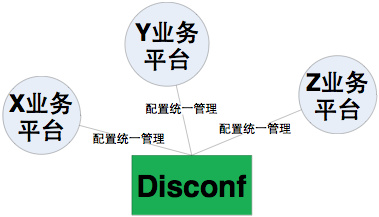
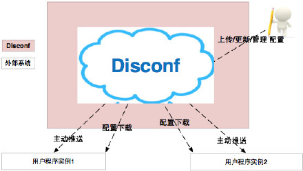
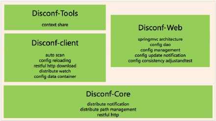
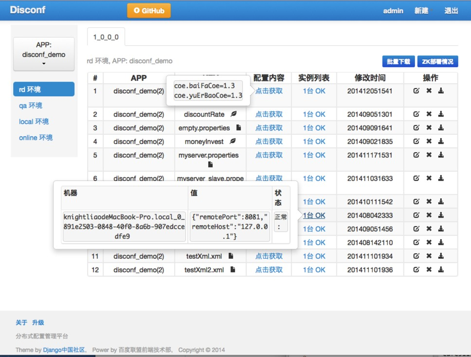

转载自：https://github.com/knightliao/disconf
Distributed Configuration Management Platform(分布式配置管理平台)
专注于各种 分布式系统配置管理 的通用组件/通用平台, 提供统一的配置管理服务。

包括 百度、滴滴出行、银联、网易、拉勾网、苏宁易购、顺丰科技 等知名互联网公司正在使用!
「disconf」在「2015 年度新增开源软件排名 TOP 100(OSC开源中国提供)」中排名第16强。
主要目标：
- 部署极其简单：同一个上线包，无须改动配置，即可在 多个环境中(RD/QA/PRODUCTION) 上线
- 部署动态化：更改配置，无需重新打包或重启，即可 实时生效
- 统一管理：提供web平台，统一管理 多个环境(RD/QA/PRODUCTION)、多个产品 的所有配置
- 核心目标：一个jar包，到处运行
demos
https://github.com/knightliao/disconf-demos-java
项目信息
- CLIENT 端：
- WEB 管理端：
- Java SpringMvc 实现，前后端分离 实现方式(基于Spring 4.1.7.RELEASE)
- 开放API，让开发者具有自定义定制web控制台界面的能力 Tutorial12 web开放API
java client
disconf.git branches and Maven version:
- dev(develop branch): 2.6.33-SNAPSHOT
- master(stable branch)：2.6.32
- 更新日志
- 在Maven Central Repository里查看 com.baidu.disconf
Java Client Elegant Usage Preview
功能特点
- 支持配置（配置项+配置文件）的分布式化管理
- 配置发布统一化
- 配置发布、更新统一化:
- 同一个上线包 无须改动配置 即可在 多个环境中(RD/QA/PRODUCTION) 上线
- 配置存储在云端系统，用户统一管理 多个环境(RD/QA/PRODUCTION)、多个平台 的所有配置
- 配置更新自动化：用户在平台更新配置，使用该配置的系统会自动发现该情况，并应用新配置。特殊地，如果用户为此配置定义了回调函数类，则此函数类会被自动调用。
- 极简的使用方式（注解式编程 或 XML无代码侵入模式）：我们追求的是极简的、用户编程体验良好的编程方式。目前支持两种开发模式：基于XML配置或者基于注解，即可完成复杂的配置分布式化。
注：配置项是指某个类里的某个Field字段。
Disconf的功能特点描述图：

查看大图
其它功能特点
- 低侵入性或无侵入性、强兼容性：
- 低侵入性：通过极少的注解式代码撰写，即可实现分布式配置。
- 无侵入性：通过XML简单配置，即可实现分布式配置。
- 强兼容性：为程序添加了分布式配置注解后，开启Disconf则使用分布式配置；若关闭Disconf则使用本地配置；若开启Disconf后disconf-web不能正常Work，则Disconf使用本地配置。
- 支持配置项多个项目共享，支持批量处理项目配置。
- 配置监控：平台提供自校验功能（进一步提高稳定性），可以定时校验应用系统的配置是否正确。
模块架构图

查看大图
模块信息
- CLIENT: client目标是支持多语言。目前只提供了java语言客户端。
- 管理端：disconf-web是统一的分布式配置管理平台。disconf-web: 分布式配置平台服务模块, 依赖disconf-core包。采用SpringMvc+纯HTML方式（前后端分离架构）实现。用户使用它来进行日常的分布式配置管理。
用户指南
client
java client: disconf-client 使用
在您的 Maven POM 文件里加入：
<dependency>
<groupId>com.baidu.disconf</groupId>
<artifactId>disconf-client</artifactId>
<version>2.6.31</version>
</dependency>
server: disconf-web 使用
部署方法请参见：https://github.com/knightliao/disconf/tree/master/disconf-web
全新主页，高清大图：
APP+环境+版本+ZK查询：

java client Tutorials
总体概述
基于注解式的分布式配置（支持配置文件和配置项）
推荐新建的项目使用disconf时使用
注：将配置文件移至一个专有类里，而不是分散在项目的各个地方，整个代码架构清晰易懂、易管理。 即便如果哪天不使用disconf，也只需要将注解去掉即可。
基于XML的分布式配置（无代码侵入）（仅支持配置文件）
推荐新建的项目或旧项目使用disconf时使用
demos
https://github.com/knightliao/disconf-demos-java